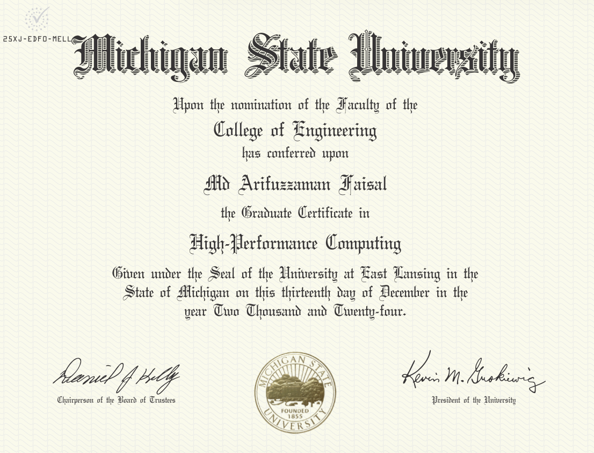

Plasma Physics, Space-Charge Limitted Emission, Vacuum Electronics, Scientific ML
Electron beams, interfaces, and data-driven models for advanced electronic systems.
I am a Ph.D. student in Nuclear Engineering and Radiological Sciences at the University of Michigan.
My work combines analytical theory, plasma physcis, electron emission, space-charge transport, particle-in-cell simulation, beam-wave interaction, contact resistance, and scientific machine learning for plasma and device modeling.
Space-charge-limited emissionPIC simulationBeam-Wave InteractionSmith-Purcell radiationContact resistanceScientific ML
About
My work connects emission physics, electromagnetic structures, material interfaces, and data-driven scientific modeling.
My research sits at the intersection of vacuum electronics, plasma physics, electron emission, THz radiation sources, thin-film contacts, and scientific machine learning. I study how electrons are emitted, transported, modulated, and coupled to electromagnetic structures, and how material interfaces control current flow in modern electronic devices.
In vacuum electronics, I work on Smith-Purcell radiation, slow-wave structures, hot-tube dispersion, start-current scaling, magnetron physics, field emission, and space-charge-limited current. I combine analytical derivations with PIC simulations to test emission models, boundary conditions, phase-space evolution, field diagnostics, and mode growth.
In electronic materials, I develop physics-based models for current crowding and contact resistance in anisotropic 2D thin films. This work uses exact field solutions and finite-element validation to connect device geometry, material anisotropy, and spreading resistance in vertical contacts to layered materials.
My current summer research direction at Los Alamos National Laboratory focuses on spatially resolved photocathode quantum-efficiency data. I am applying multi-output Gaussian processes and related machine-learning tools to connect wavelength-dependent QE maps with spatial variation, stoichiometry, growth, and degradation mechanisms.
Education
University of Michigan: Ph.D. in Nuclear Engineering and Radiological Sciences, in progress; research with Prof. Peng Zhang on plasma physics, vacuum electronics, electron emission, space-charge effects, THz sources, and contact/interface physics.
Michigan State University | Apr 2024: M.Sc. in Electrical and Computer Engineering; research on Smith-Purcell radiation, grating optimization, hot-tube dispersion, and start-current reduction for compact THz vacuum electronic sources.
Bangladesh University of Engineering and Technology | 2016: B.Sc. in Electrical and Electronic Engineering.
Work Experience
Graduate Student Intern, Los Alamos National Laboratory | Jun 2026 - Aug 2026: photocathode data analysis, spatially resolved quantum-efficiency maps, and scientific machine learning.
Graduate Research Assistant, University of Michigan | Jan 2025 - Present: plasma physics, electron emission, beam-wave interaction, vacuum electronics, and contact/interface physics.
Graduate Research Assistant, Michigan State University | Aug 2021 - Dec 2024: THz Smith-Purcell radiation, slow-wave structures, grating optimization, and beam-wave modeling.
Visiting Research Fellow, Singapore University of Technology and Design | May 2022 - Aug 2022: analytical modeling of AC ohmic-contact resistance and interface effects at THz frequencies.
Research
Research themes organized around electron emission, space-charge transport, electromagnetic mode growth, and interfaces as active design elements.
Vacuum electronics and THz radiation sources
Smith-Purcell radiation • slow-wave structures • start current
I study how grating geometry and dispersion control spatial growth rate, start current, and mode selection in compact THz vacuum electronic sources.
Space-charge-limited current and emission physics
Child-Langmuir law • finite temperature • field emission
I develop and test emission models for cold, multi-energy, and thermionic electron populations, including reflected/transmitted phase-space dynamics and SCL thresholds.
PIC simulation of beams, plasmas, and magnetrons
WarpX • diagnostics • phase space
I use particle-in-cell simulations to analyze electron emission, magnetron startup, beam-wave interaction, field snapshots, phase space, and frequency spectra.
Anisotropic contact resistance in 2D materials
Exact field solution • current crowding • spreading resistance
I model current crowding and spreading resistance in vertical contacts to anisotropic thin films, linking geometry and transport anisotropy to measured contact resistance.
Machine learning for photocathode QE maps
MOGP • wavelength correlation • uncertainty
I apply multi-output Gaussian processes to spatially resolved quantum-efficiency data to learn correlations across wavelengths and connect measurements to material variation.
Methods
Analytical theory • FEM • PIC • Bayesian ML
My workflow combines derivation, numerical solvers, simulation diagnostics, validation against experiments, and reproducible computational notebooks.
Publications
Selected work spans anisotropic contact resistance, THz Smith-Purcell radiation, grating optimization, hot-tube dispersion, and beam-wave modeling.
Impact of Anisotropic Conductivity on Current Crowding and Spreading Resistance in Vertical Contacts to 2D Thin Films
M. A. Faisal and P. Zhang, ACS Applied Electronic Materials, 2026.
Impact of Anisotropic Conductivity on Current Crowding and Spreading Resistance in Vertical Contacts to 2D Thin Films. M. A. Faisal and P. Zhang, ACS Applied Electronic Materials, 2026.
2025 Journal
Parametric Analysis on Enhancement of THz Smith-Purcell Radiation by Two-Layer Grating Structure. M. A. Faisal and P. Zhang, IEEE Transactions on Plasma Science, 2025.
2024 Conference
Analysis of THz Smith-Purcell Radiation in Single- and Two-Layer Gratings Utilizing Hot-Tube Dispersion Relation. M. A. Faisal and P. Zhang, conference proceeding/presentation, 2024.
2023 Journal + conference
Grating Optimization for Smith-Purcell Radiation: Direct Correlation Between Spatial Growth Rate and Starting Current. M. A. Faisal and P. Zhang, IEEE Transactions on Electron Devices, 2023.
Smith-Purcell Radiation by a Two-Layer Grating Structure. M. A. Faisal and P. Zhang, conference presentation, 2023.
Manuscripts in preparation Drafts
Finite-temperature and spectral-tail space-charge-limited current in vacuum diodes. Analytical and PIC-based study in progress.
Physics-guided multi-output Gaussian-process modeling of spatially resolved photocathode QE maps. Photocathode data-analysis workflow in progress.
Training & Certificates
Selected technical training supporting my research in plasma physics, accelerator science, semiconductor devices, scientific computing, and responsible research practice.
Certificates and training
High-Performance Computing Certificate: training in scalable computation and scientific workflows for simulation and data-intensive research.
Accelerator Science and Engineering Certificate: graduate training connected to accelerator physics, beam dynamics, and accelerator-enabled science.
Semiconductor Manufacturing, Processing, and Devices Certificate: coursework and training connected to semiconductor processing, device physics, and emerging electronics.
Responsible Conduct of Research and Scholarship Training: research ethics, responsible scholarship, and professional research practice.
Technical preparation
These training experiences support my work across particle-in-cell simulation, beam and plasma modeling, semiconductor device physics, scientific machine learning, and reproducible computational research.

Services
Professional service, student leadership, technical coordination, and peer-review activities.
Student leadership and IEEE service
IEEE NPSS MSU Student Branch: student leadership and technical activities.
IEEE Southeastern Michigan: student representative and technical chair service for regional conference activities.
Chair, IEEE NPSS Student Branch, Michigan State University | Nov 2022 - Dec 2024: organized technical seminars and coordinated collaboration with industry and IEEE chapters.
Reviewer service
Reviewer, IEEE Access | July 2025 - Present: peer-review service for interdisciplinary engineering and applied science manuscripts.
Reviewer, IEEE Transactions on Plasma Science | February 2026 - Present: peer-review service for plasma science, beam physics, and related research manuscripts.
Contact
For research discussion, collaboration, or academic questions, email is the fastest way to reach me.